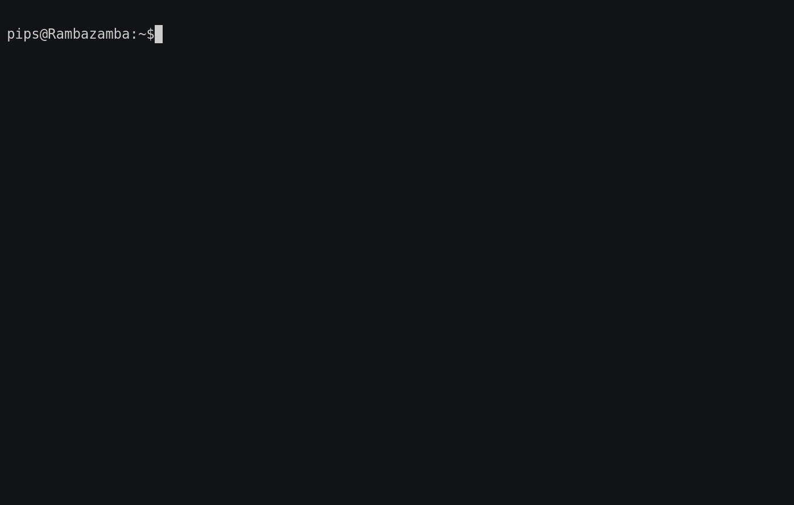

Newsletter #9 - Three's company
What is Neovim?
Neovim is a fork of the venerable text-editor vim, focused on extensibility and usability. It is not a rewrite but a continuation and extension of Vim. Many clones and derivatives exist, some very clever—but none are Vim. Neovim is built for users who want the good parts of Vim, and more. See a list of differences via :help vim-differences.
Participating
If you are interested in contributing to Neovim, visit the github page for details. We have a great test suite and automated CI, so you can just jump in and have a go. Don't be afraid to open a PR to get comments or just take advantage of the infrastructure!
To get in touch with the team, join the gitter channel (also accessible via IRC), or visit the Neovim subreddit, which many of the developers read. Taking part in conversations is a contribution, too!
New contributor shoutout: @janlazo has been on a rampage for both windows support and porting neovim patches since about September 2017. Thank you!
Old contributor shoutout: @jamessan has been around since March 2014, and, while being generally smart and helpful, has been doing tremendous work on the debian package of neovim. Thank you!
What's new
The last newsletter covered everything up to release 0.2.2 of Neovim. Two years have passed, and the project has been as busy as ever improving both user and developer experience. Along the way we released in June 2018 the version 0.3. Though this newsletter arrives late (after version 0.4 was released), we still deemed it worth to introduce 0.3 in case you missed anything (0.4 will be covered in a future newsletter):
As always, check Following HEAD for any breaking changes.
0.3 for Users
-
A lot of work has been put into making Neovim work better with different terminal emulators, and is still ongoing (@justinmk, #7664, #7653, #7720, #7640, #7624, @florolf, #7676 and @erw7 #8408)
-
Linux Users:
-
Snap packaging available (@kalikiana, #7918)
-
BSD Users:
-
Support for NetBSD (@utkarsh009, #8197)
-
Windows Users:
- Neovim ships with common tools (@equalsraf, @justinmk, #6105)
- Building with VS2017 is now supported, see the wiki (@b-r-o-c-k, 8084)
-
Neovim is available on cygwin
-
man.vimimprovements, uses lua for speedup (@keidax, #7623) -
Output from
system()and:!supports multibyte chars, and also handles control chars (CR, TAB) somewhat better (@bfredl, #7844) -
Command mappings are supported (@bfredl, #4419)
-
An unmapped META key will be interpreted as Escape (@justinmk, #8226)
-
New flag
msgsepfordisplayto avoid fullscreen scrolling for messages (@bfredl, #8088) -
See it in action:
-
Numbered marks are now saved in shada files (@ZyX-I, #5908)
-
The
--listencommand line option replaces the usage of$NVIM_LISTEN_ADDRESS(@justinmk, #8247) -
Neovim treats stdin as text, rather than commands. If you want to run stdin as normal mode commands, use
nvim -s -(@justinmk, #7679, @ZyX-I, #6299 and @b-r-o-c-k, #8276) -
Neovim recognizes mouse events in (u)rxvt (@symphorien, #8309)
-
Macros apply
:lmapwhen executing (@hardenedapple, #5658) -
defaults:
0.3 for Developers
-
The list implementation has been hidden behind an API to foster further improvements (@ZyX-l, #7708). Developers, in particular people that port patches from vim, should have a look at the wiki page.
-
Changed API functions:
nvim_command_output(@justinmk, #7821)-
vim_fgets(@mhinz, #8228) -
New API functions:
nvim_list_uis@geekodour, #8004)nvim_get_commands(@nimitbhardwaj, @justinmk, #8375)stdpath(@docwhat, #6272)nvim_set_client_info,nvim_get_chan_infoandnvim_list_chans(@bfredl, #6743)-
nvim_buf_attach/-detachimplement buffer change notifications. Using these functions, you can subscribe to events that are sent when a buffer has been updated, no matter the source or method (@phodge, @KillTheMule, #7917) -
Channels: support buffered output and bytes sockets/stdio (@bfredl, #6844)
-
A proper viml expression parser is now available (@ZyX-l, #7234)
- It comes with various highlight groups, have a look at the following screen recording: 
The near future: Upcoming
- Floating Windows for external UI's (@bfredl, #6619)
- Extended Marks (@timeyyy, #5031)
- Built in LSP support (@tjdevries, #6856) (see http://langserver.org/ why that could be of interest to you)
Around Neovim
GSOC
Neovim had been accepted into the Google Summer of Code(GSOC). We've had two students working on interesting developments:
- @UtkarshMe worked on extending the UI protocol and externalizing window layout and control. Be sure to check out his blog for a summary!
- @b-r-o-c-k previously active on the windows front before, implemented a .NET API client for Neovim.
Thanks for your awesome contributions, and thanks to the mentors @bfredl and @justinmk!
Related projects
The wiki page of related projects is an evergrowing list of projects that somehow make use of Neovim's extended capabilities. Here's a gist of additions since the last newsletter:
Plugins
The following plugins have found their way into our wiki:
- neomake-multiprocess: A vim plugin for running multiple process asynchronously based on neomake
- neopipe: send lines of text to an external command and display output in a scratch buffer
- nuake: A Quake-style terminal panel for Neovim
- semshi: Semantic Highlighting for Python
- vim-ghost: Neovim client for GhostText browser extension (firefox and chrome)
API Clients
If you thought 3 C++ clients wasn't enough, you will be happy to hear that a 4th contender has entered the arena:
If you happen to prefer a language with no API client listed, a good starting point are the docs, and be sure to come talk about it on the gitter channel.
GUIs
Three new GUIs were added since the last newsletter:
Blog posts
Some blog posts that talk about some specifically Neovim things:
Testing plugins from Neovimwalks you through using the Neovim test infrastructure for your pluginRpc benchmarksshows and benchmarks different approaches in using the RPC API to create folds from a plugin.Neovim for Haskell Developmentshows how Neovim can help you with your haskell development needs
Featured project
For quite some time @mhinz has been maintaining neovim-remote. While only available on unices (though windows support is on the table), it solves some use cases people ask about frequently, such as:
- How can I open a file in an already existing Neovim instance?
- How can I open a file from a Neovim terminal without nesting editor instances?
- How can I remotely send a command to a running Neovim instance?
To whet your appetite, here's a little gif

Something missing?
Know more than the wiki? Just edit the page to let the world know!
Stats
Changes lines since the last newsletter:
git log --since="2017-12-16" --numstat --pretty=tformat: --numstat|gawk '{ add += $1; subs += $2; loc += $1 - $2 } END { printf "added lines: %s removed lines: %s total lines: %s\n", add, subs, loc }'
added lines: 109127 removed lines: 40267 total lines: 68860
Merged commits:
git log --since="2017-12-16"|wc -l
24167
Different commit authors:
git shortlog -e -s -n --since="2017-12-16"|wc -l
129
Documentation changes:
git log --since="2017-12-16" --numstat --pretty=tformat: --numstat runtime/doc|gawk '{ add += $1; subs += $2; loc += $1 - $2 } END { printf "added lines: %s removed lines: %s total lines: %s\n", add, subs, loc }'
added lines: 4369 removed lines: 3645 total lines: 724
Thanks
Thank you contributors, sponsors, bug-reporters, supporters. Thank you @justinmk for the awesome project and thank you @brammool for your foundational work.